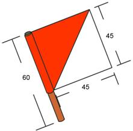

Banderolas para Semáforo
Necesitarás dos (02) banderolas para transmitir.
Cada una debe tener un mástil de 60 centímetros de largo, y un grosor que te sea fácil de maneja, así mismo cada banderola será de 45 x 45 centímetros.
Es recomendable que las confecciones en dos colores, uno claro y uno oscuro, preferiblemente rojo y blanco.
La tela debe ser resistente a la intemperie y estar muy bien cosida.